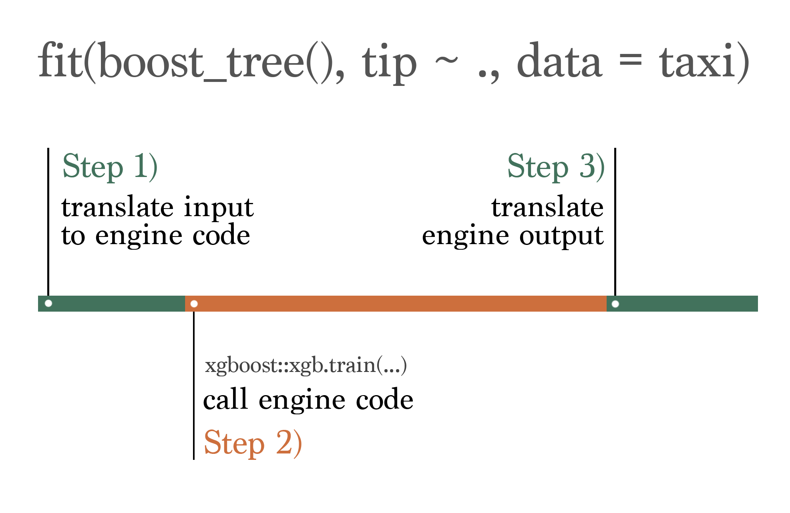

tl;dr: The development versions of tidymodels packages include methods for a new extract function,
extract_fit_time(), that returns the time required to train a workflow. Passextract_fit_time()as a control option while tuning and runcollect_extracts()to see training times for resampled workflows. In this example, we can identify a modeling workflow that trains more than 10x faster than the most performant model with very little decrease in predictive performance.
A year ago, Emil put together a proof of concept for a function that would return measurements of how long it took for different tidymodels objects to fit. This had been a longstanding feature request across many of our repositories. Then, we got pretty busy implementing survival analysis and fairness metrics and only recently picked these changes back up to polish off the rough edges. We just merged them into the main developmental versions of the packages and are interested in hearing what folks think before they head off to CRAN!
To install the packages with these changes, use the following code:
Now, loading the tidymodels packages:
Getting started
For a simpler example, let’s start off with just fitting a parsnip model. We’ll use the taxi data from modeldata as an example, predicting whether a trip will result in a tip or not:
taxi# A tibble: 10,000 × 7
tip distance company local dow month hour
<fct> <dbl> <fct> <fct> <fct> <fct> <int>
1 yes 17.2 Chicago Independents no Thu Feb 16
2 yes 0.88 City Service yes Thu Mar 8
3 yes 18.1 other no Mon Feb 18
4 yes 20.7 Chicago Independents no Mon Apr 8
5 yes 12.2 Chicago Independents no Sun Mar 21
6 yes 0.94 Sun Taxi yes Sat Apr 23
7 yes 17.5 Flash Cab no Fri Mar 12
8 yes 17.7 other no Sun Jan 6
9 yes 1.85 Taxicab Insurance Agency Llc no Fri Apr 12
10 yes 1.47 City Service no Tue Mar 14
# ℹ 9,990 more rowsThe following code fits an XGBoost boosted tree with parsnip:
taxi_fit <- fit(boost_tree(mode = "classification"), tip ~ ., taxi)With these new package versions, we now have access to a function called extract_fit_time() that will return the elapsed time to fit the model:
extract_fit_time(taxi_fit)# A tibble: 1 × 2
stage_id elapsed
<chr> <dbl>
1 boost_tree 0.120Couldn’t we just wrap that whole fit() expression in system.time() and get the same thing, though?
Actually, no! extract_fit_time() returns the elapsed time to evaluate the engine fit, without tidymodels’ overhead on top. The differences between system.time() and the value of extract_fit_time() are exactly where this new function will come in handy.
tidymodels doesn’t actually implement it’s own training algorithms for boosted trees. Instead, the framework takes in code with a common input interface, translates that code to pass off to modeling engines which take care of the actual training, and then translates the output back to a common output interface. That process can be visualized something like this:

When viewed through the lens of elapsed time, the portion of the diagram in orange, labeled Step 2), is what is measured by extract_fit_time(). The portions of the elapsed time shown in green, labeled Steps 1) and 3), are tidymodels’ “overhead.” That could be measured as the difference between system.time() and extract_fit_time(). Let’s calculate that difference exactly:
taxi_elapsed <-
system.time({
taxi_fit <- fit(boost_tree(mode = "classification"), tip ~ ., taxi)
})[["elapsed"]]Juxtaposing those two values:
taxi_elapsed[1] 0.119extract_fit_time(taxi_fit)$elapsed[1] 0.113The total elapsed time of the fit is 0.119 seconds, and the portion of that elapsed time spent inside of XGBoost is 0.113 seconds. Said another way, the XGBoost fit itself accounts for 95% of the total time of this model fit.
The story is a bit more complicated for recipes, which also now have extract_fit_time() methods. We do implement the training routines for many of those ourselves, so the concept of “overhead” isn’t so straightforward there. For those methods, fit times refer to the elapsed times of prep() and bake() while each step is trained.
Measuring the relative overhead of tidymodels is of interest to us as the developers, of course. More importantly, though, these tools can also be used to get a sense for how long different parts of a larger ML pipeline take compared to each other and choose models that fit and predict more quickly (as long as predictions are similarly performant).
Resampling a model
As an example, let’s tune this XGBoost model using cross-validation. First, we’ll split the taxi data up into training and testing sets, resampling the training set:
set.seed(123)
taxi_split <- initial_split(taxi, prop = 0.8, strata = tip)
taxi_train <- training(taxi_split)
taxi_test <- testing(taxi_split)
taxi_folds <- vfold_cv(taxi_train)Then, defining a boosted tree model that tunes learn_rate and trees; boosted tree ensembles with higher learn_rates might not perform as effectively, but they require fewer trees in the ensemble and thus train faster. We’d like to find the “sweet spot” of combinations of these parameters.
bt <-
boost_tree(
mode = "classification",
learn_rate = tune(),
trees = tune()
)Now, we’ll conduct a grid search for the best values of learn_rate and trees, passing the new extract_fit_time() function to the control function control_grid(). Every time we fit a model when resampling (nrow(taxi_folds) * grid = 10 * 10 = 100 times!), we’ll extract how long it took the engine to fit.
bt_res <-
tune_grid(
bt,
tip ~ .,
taxi_folds,
control = control_grid(extract = extract_fit_time)
)This is what the bt_res object looks like:
bt_res# Tuning results
# 10-fold cross-validation
# A tibble: 10 × 5
splits id .metrics .notes .extracts
<list> <chr> <list> <list> <list>
1 <split [7200/800]> Fold01 <tibble [30 × 6]> <tibble [0 × 4]> <tibble>
2 <split [7200/800]> Fold02 <tibble [30 × 6]> <tibble [0 × 4]> <tibble>
3 <split [7200/800]> Fold03 <tibble [30 × 6]> <tibble [0 × 4]> <tibble>
4 <split [7200/800]> Fold04 <tibble [30 × 6]> <tibble [0 × 4]> <tibble>
5 <split [7200/800]> Fold05 <tibble [30 × 6]> <tibble [0 × 4]> <tibble>
6 <split [7200/800]> Fold06 <tibble [30 × 6]> <tibble [0 × 4]> <tibble>
7 <split [7200/800]> Fold07 <tibble [30 × 6]> <tibble [0 × 4]> <tibble>
8 <split [7200/800]> Fold08 <tibble [30 × 6]> <tibble [0 × 4]> <tibble>
9 <split [7200/800]> Fold09 <tibble [30 × 6]> <tibble [0 × 4]> <tibble>
10 <split [7200/800]> Fold10 <tibble [30 × 6]> <tibble [0 × 4]> <tibble> Understanding fit time and performance
Every column in a tuning result that’s prefixed with a . has a collect_*() function associated with it that helps to summarize that column. We’ll use collect_extracts() to collect information on the extracts which are, in this case, elapsed fit times:
bt_extracts <- collect_extracts(bt_res)
bt_extracts# A tibble: 100 × 5
id trees learn_rate .extracts .config
<chr> <int> <dbl> <list> <chr>
1 Fold01 922 0.00161 <tibble [1 × 3]> Preprocessor1_Model01
2 Fold01 1804 0.00293 <tibble [1 × 3]> Preprocessor1_Model02
3 Fold01 81 0.00394 <tibble [1 × 3]> Preprocessor1_Model03
4 Fold01 445 0.00886 <tibble [1 × 3]> Preprocessor1_Model04
5 Fold01 1074 0.0171 <tibble [1 × 3]> Preprocessor1_Model05
6 Fold01 347 0.0218 <tibble [1 × 3]> Preprocessor1_Model06
7 Fold01 1486 0.0393 <tibble [1 × 3]> Preprocessor1_Model07
8 Fold01 1391 0.0604 <tibble [1 × 3]> Preprocessor1_Model08
9 Fold01 788 0.111 <tibble [1 × 3]> Preprocessor1_Model09
10 Fold01 1609 0.203 <tibble [1 × 3]> Preprocessor1_Model10
# ℹ 90 more rowsUnnesting on .extracts so we can see some of those timings:
bt_extracts_unnested <- bt_extracts %>% unnest(cols = ".extracts")
bt_extracts_unnested# A tibble: 100 × 7
id trees learn_rate stage process_id elapsed .config
<chr> <int> <dbl> <chr> <chr> <dbl> <chr>
1 Fold01 922 0.00161 workflow workflow 4.94 Preprocessor1_Model01
2 Fold01 1804 0.00293 workflow workflow 9.54 Preprocessor1_Model02
3 Fold01 81 0.00394 workflow workflow 0.444 Preprocessor1_Model03
4 Fold01 445 0.00886 workflow workflow 2.36 Preprocessor1_Model04
5 Fold01 1074 0.0171 workflow workflow 5.40 Preprocessor1_Model05
6 Fold01 347 0.0218 workflow workflow 1.8 Preprocessor1_Model06
7 Fold01 1486 0.0393 workflow workflow 7.34 Preprocessor1_Model07
8 Fold01 1391 0.0604 workflow workflow 6.99 Preprocessor1_Model08
9 Fold01 788 0.111 workflow workflow 3.87 Preprocessor1_Model09
10 Fold01 1609 0.203 workflow workflow 7.99 Preprocessor1_Model10
# ℹ 90 more rowsThe times to fit vary quite a bit between workflows, to say the least:
ggplot(bt_extracts_unnested) +
aes(x = elapsed) +
geom_histogram(binwidth = 1, boundary = 0) +
scale_x_continuous(
breaks = seq(0, max(bt_extracts_unnested$elapsed) + 1, 1L)
) +
labs(x = "Elapsed fit time")Almost all of this variation in elapsed time is explained by the value of trees:
ggplot(bt_extracts_unnested) +
aes(x = elapsed, y = trees) +
geom_jitter() +
labs(x = "Elapsed fit time", y = "# of trees")The “clumps” of points are the 10 different unique combinations of trees and learn_rates that are fitted on 10 different resamples; identical hyperparameters lead to very similar fit times, in this case.
In use cases where we will go on to resample/train this model many times (such as in iterative search or continuous training) it may be advantageous for us to pick a model that fits as quickly as possible as long as it has comparable performance with the overall most performant model. We can integrate the information from collect_metrics() with collect_extracts() to see if there any quick-fitting models with comparable performance. First, collecting metrics:
bt_metrics <- collect_metrics(bt_res)
bt_metrics# A tibble: 30 × 8
trees learn_rate .metric .estimator mean n std_err .config
<int> <dbl> <chr> <chr> <dbl> <int> <dbl> <chr>
1 922 0.00161 accuracy binary 0.924 10 0.00214 Preprocessor1_…
2 922 0.00161 brier_class binary 0.0784 10 0.00128 Preprocessor1_…
3 922 0.00161 roc_auc binary 0.639 10 0.0112 Preprocessor1_…
4 1804 0.00293 accuracy binary 0.924 10 0.00218 Preprocessor1_…
5 1804 0.00293 brier_class binary 0.0693 10 0.00160 Preprocessor1_…
6 1804 0.00293 roc_auc binary 0.628 10 0.0126 Preprocessor1_…
7 81 0.00394 accuracy binary 0.924 10 0.00212 Preprocessor1_…
8 81 0.00394 brier_class binary 0.165 10 0.000467 Preprocessor1_…
9 81 0.00394 roc_auc binary 0.636 10 0.0110 Preprocessor1_…
10 445 0.00886 accuracy binary 0.923 10 0.00211 Preprocessor1_…
# ℹ 20 more rowsJoining this output:
bt_metrics_extracts <-
left_join(
# metrics, summarized across resamples
bt_metrics,
# summarize fit times across resamples
summarize(
bt_extracts_unnested,
elapsed = mean(elapsed),
.by = c(trees, learn_rate, .config)
),
by = c("trees", "learn_rate", ".config")
) %>%
relocate(elapsed, .before = everything())
bt_metrics_extracts# A tibble: 30 × 9
elapsed trees learn_rate .metric .estimator mean n std_err .config
<dbl> <int> <dbl> <chr> <chr> <dbl> <int> <dbl> <chr>
1 4.95 922 0.00161 accuracy binary 0.924 10 0.00214 Prepro…
2 4.95 922 0.00161 brier_class binary 0.0784 10 0.00128 Prepro…
3 4.95 922 0.00161 roc_auc binary 0.639 10 0.0112 Prepro…
4 9.55 1804 0.00293 accuracy binary 0.924 10 0.00218 Prepro…
5 9.55 1804 0.00293 brier_class binary 0.0693 10 0.00160 Prepro…
6 9.55 1804 0.00293 roc_auc binary 0.628 10 0.0126 Prepro…
7 0.441 81 0.00394 accuracy binary 0.924 10 0.00212 Prepro…
8 0.441 81 0.00394 brier_class binary 0.165 10 0.000467 Prepro…
9 0.441 81 0.00394 roc_auc binary 0.636 10 0.0110 Prepro…
10 2.37 445 0.00886 accuracy binary 0.923 10 0.00211 Prepro…
# ℹ 20 more rowsNow, plotting:
ggplot(bt_metrics_extracts) +
aes(x = elapsed, y = mean) +
geom_point() +
facet_wrap(~.metric, scales = "free") +
labs(x = "Elapsed fit time", y = "Metric value")In this context, we see that w.r.t accuracy() and brier_class(), there’s not a clear relationship between the elapsed fit time and model performance. w.r.t. roc_auc(), longer-fitting models seem less performant.
By most measures, none of these models are particularly performant. Alas.üôÇ
Model selection
We can use the select_best() function from tune to pick the most performant model, without regard for elapsed fit time:
bt_most_performant <- select_best(bt_res, metric = "roc_auc")
bt_most_performant# A tibble: 1 × 3
trees learn_rate .config
<int> <dbl> <chr>
1 922 0.00161 Preprocessor1_Model01Using roc_auc(), ignoring fit time, we’d choose the model configuration Preprocessor1_Model01, corresponding to an roc_auc() of 0.639.
Instead, we could choose the quickest-fitting model with a performance value within one standard error of the most performant model.
best_fit <-
bt_metrics_extracts %>%
filter(.metric == "roc_auc") %>%
arrange(desc(mean)) %>%
select(mean, std_err, elapsed, .config)
best_speedy_fit <-
bt_metrics_extracts %>%
filter(.metric == "roc_auc") %>%
filter(mean >= best_fit$mean - best_fit$std_err) %>%
arrange(elapsed) %>%
slice(1)
best_speedy_fit# A tibble: 1 × 9
elapsed trees learn_rate .metric .estimator mean n std_err .config
<dbl> <int> <dbl> <chr> <chr> <dbl> <int> <dbl> <chr>
1 0.441 81 0.00394 roc_auc binary 0.636 10 0.0110 Preprocessor1…Existing tidymodels users may recognize this selection workflow as an ad-hoc version of select_by_one_std_err().
Now, integrating our knowledge of fit time, we’d choose the model configuration Preprocessor1_Model03, corresponding to an roc_auc() of 0.636. The mean elapsed fit time for this model is 0.441 seconds, compared a mean elapsed fit time for the most performant model of 4.951 seconds, a speedup of 11.2x! Of course, this isn’t as much of an issue when model fits are as quick as they are here, but for more complex fits on larger datasets, an order of magnitude is a gamechanger.
What do you think?
These changes haven’t yet made it to the CRAN versions of tidymodels packages (and likely won’t for a good bit). Before they hit CRAN, we’d love to hear your thoughts on the interface and take any suggestions on how we might improve the interface.